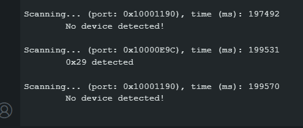
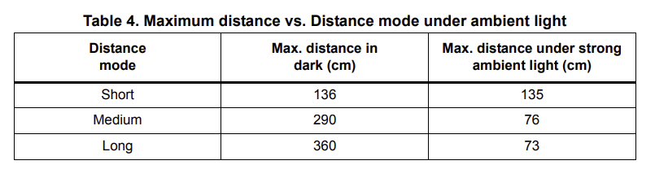
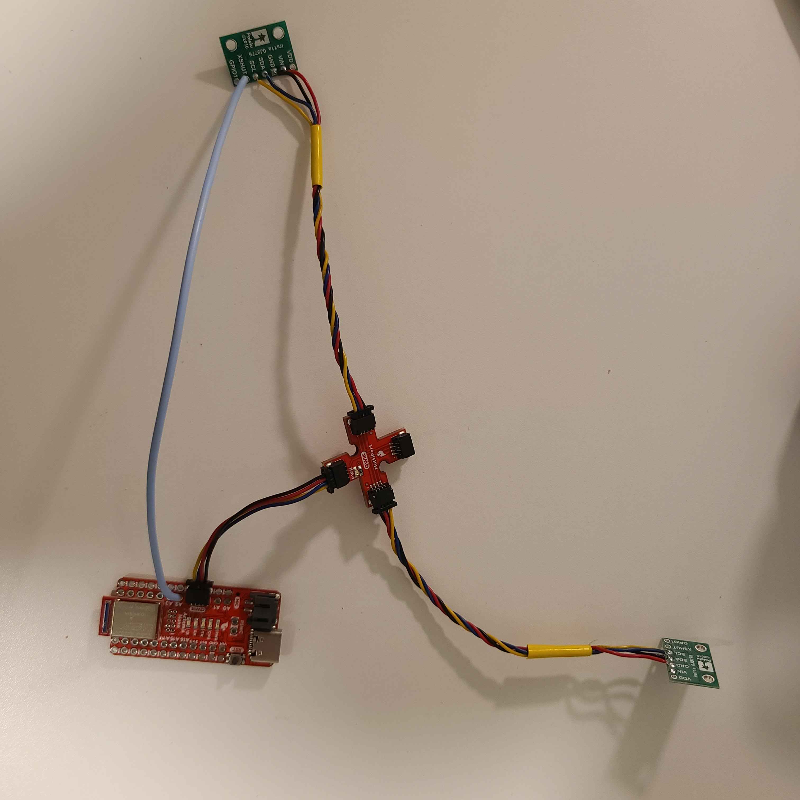
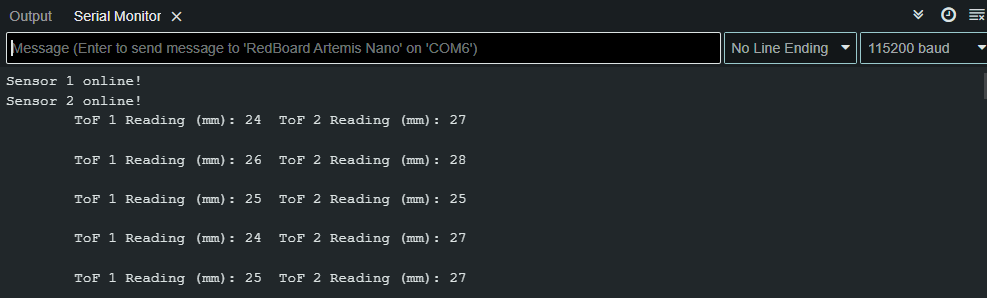
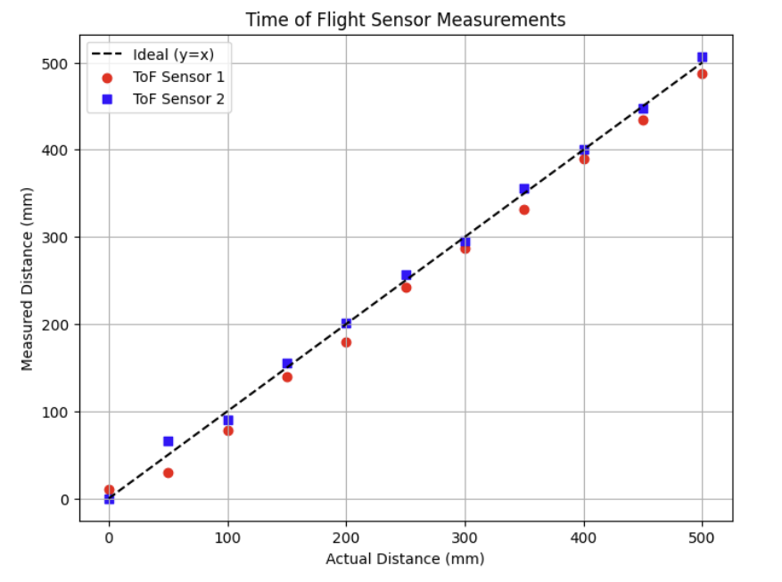
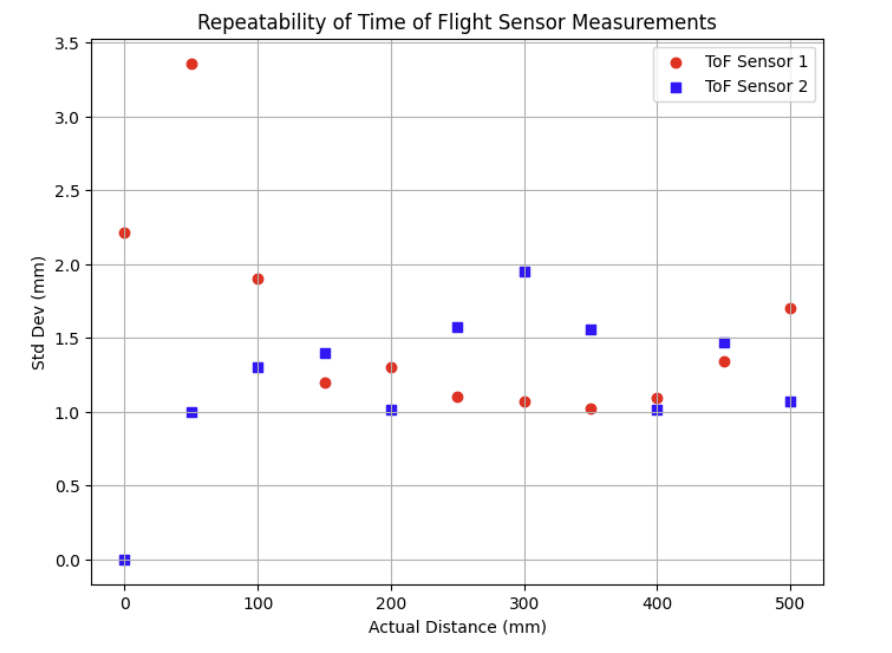
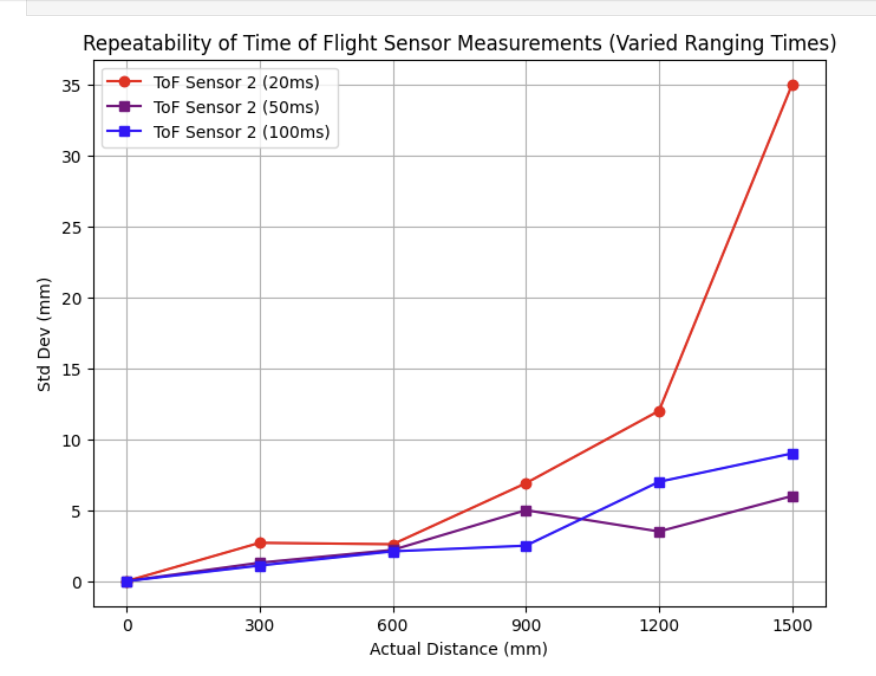
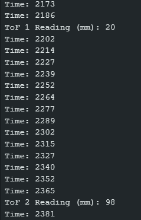

Task 2
ToF sensor connection
Picture of your ToF sensor connected to your QWIIC breakout board.
Screenshot of Artemis scanning for I2C device (and discussion on I2C address). Does the address match what you expected? If not, explain why.

The address returned by the I2C scanner code did not match my expectations. Following the Polulu datasheet, we would expect the scanner to detect the ToF sensor at its stated default address of 0x52, but instead it returns 0x29.
After some research, it appears this is because the 0x52 value stated on the datasheet is the full I2C address range, where the first 7 bits of the range (1010010) is the actual slave address, and the last bit in the range signifies data direction (read or write).
Just taking the 7 bit address of 0101001 and ignoring the read/write bit, we get the I2C address returned by the scanner code which is 0x29.
ToF Setup
The ToF sensor has three modes, that optimize the ranging performance given the maximum expected range.
Discuss the pros/cons of each mode, and think about which one could work on the final robot.
.setDistanceModeShort(); //1.3m .setDistanceModeMedium(); //3m .setDistanceModeLong(); //4m, Default

According to the datasheet (a relevant snippet shown above), setDistanceModeShort() appears to be the most resilient to ambient light, but its drawback is that it is the most limited in sensing range to approximately 1.35m.
setDistanceModeLong() appears to be easily impacted by ambient light, but has the greatest sensing range of 4 meters.
setDistanceModeMedium() seems to be a good balance between both the short and long distance modes, but this also means it is not the best of the options in either metric. Also, looking at the datasheet, it appears that it's maximum sensing range is also greatly impacted by ambient light.
After deliberating on which sensor mode to pick, I settled on using the short distance mode. I expect ambient light interference to be a prevalent issue that will likely be out of my control throughout the labs, and by choosing the short distance mode, I provide the greatest resilience to this interference that is within my control.
Furthermore, after reviewing the datasheet, the max ranging distance of the medium and long distance modes appear to be so significantly hindered by ambient light that the short distance mode actually has a higher maximum ranging distance in strong ambient light conditions. I believe a consistent 1.35m of ranging distance to be more than enough for detection of obstacles to the front and rear of my robot in a small room situation and more ideal than highly variable, albeit further sensing distances, provided by the other modes.
Test Chosen ToF distance Mode
At this point in the lab, I installed the SparkFun VL53L1X 4m laser distance sensor library.
I then ran the demo code, and tested the sensor on my lab box placed approximately 90 mm away.
ToF in Parallel
Using notes from the pre-lab, hook up both ToF sensors simultaneously and demonstrate that both work.
At this point in the lab, I soldered a connection between the XSHUT pin on one ToF sensor and the A2 pin on the Nano. Since both ToF sensors have the same default I2C address, adding this jumper allows me to disable one of the ToF sensors using the XSHUT pin to allow
me to address the active sensor and reassign it to a unique I2C address (in this case 0x4A). I can then reboot the powered off ToF sensor, and now properly address both sensors in parallel.
Below is my updated schematic:

And a snapshot of my new wiring:

2 ToF sensors and the IMU: Discussion and screenshot/video of sensors working in parallel
Using the following code implementing the shut off routine outlined earlier, I was able to get the two ToF sensors to print out measurement data in parallel whenever data was ready on both sensors:

Documenting ToF Accuracy
To test the accuracy of the sensors, I attached the 2 ToF sensors to a cardboard box directly across from my lab box, and moved the sensors back in increasing intervals of 50mm along a ruler,
plotting the actual distance to the target vs a sample from each sensor's reported distance. An image of my setup is shown below (In later iterations I switched to using a measuring tape as my iPad wasn't long enough and I was worried about possible ambient light interference).
To maximize the accuracy and precision of my sensor, I tried to reduce ambient light in the room as much as possible by turning off most lights (more ambient light would decrease ranging distance), and also chose my white lab box (as opposed to a darker surface) as it would hopefully reflect more of the IR light emitted by the ToF back to the sensor.

In this test, I noticed that at distance 0, even though my ToF sensors were directly touching the target box, one of my ToF sensors still detected the target at a nonzero distance (after multiple trials, this error was usually 10+ mm).
This same sensor also consistently underreported distances to the target by approximately 15-30 mm at each measurement point which I thought was odd.
Further, I noticed that for the first 150 mm or so, the ToF sensor data for both sensors was much further off from the expected distance to the target, which is a little higher than the datasheet's stated minimum ranging distance of around 4 cm.
Documenting Repeatability
To test the repeatability of the sensors, I conducted the same test but instead of taking just 1 sample at each point, I took 10 samples at each measurement point, and calculated the std. deviation between the samples taken at each point. Below is the plot of those std deviations.

The std. deviation appears to fluctate randomly (except on sensor 2 when pushed against the box (it consistently read 0)) across all data points, but overall the std. deviation amongst datapoints for a measurement tended to be around 1-2 mm.
Documenting Varied ToF Ranging Times
I also tested modifying the timing budget parameter for one of my sensors using the setTimingBudgetInMs() function.
According to the datasheet, "increasing the timing budget increases the maximum distance the device can range and
improves the repeatability error. However, average power consumption augments accordingly." Thus, I changed my testing
setup to measure a max range of 1500 to test how varying timing budgets would affect the maximum ranging distance and repeatability of my sensor.

Interesting to note from this test was that with the timing budget set to 20 ms, even after multiple attempts, the ToF failed to detect the obstacle from ranges 1200 mm and beyond with dramatic fluctations in measurements.
With timing budgets of 50mm and 100mm however, the ToF sensor appeared to be able to detect the lab box at these far distances but was still relatively inaccurate, which aligns with my expectations from the datasheet that the ToF sensors have a max range (in short distance mode) of around 1.35-1.4m.
Then following the similar setup as before, I again took 10 measurements at each point with each timing budget and I plotted the std deviation of the obtained datapoints at each measured distance.

As shown above, I noticed that generally as the ranging distance increased, standard deviation increased as well, but that by increasing the timing budget, there was a fair decrease in repeatability error, which aligns with the statement
from the datasheet that higher timing budgets decrease repeatability error.
One thing to note was that with a timing budget of 20ms, a huge spike in the std. deviation was observed at the 1500 mm mark. As mentioned earlier,even after repeated trials it did not seem like I could get the ToF sensor to detect the lab box with a timing budget of 20ms,
and readings at this distance could likely be attributed to slight movement in the angle of sensors shifting in their tape over time causing them to detect other objects or some other form of noise in the system.
Lastly, I was also able to send timestamped ToF data from my sensors in parallel to my laptop over BLE and plotted the readings below.

Write a piece of code that prints the Artemis clock to the Serial as fast as possible, continuously, and prints new ToF sensor data from both sensors only when available.
The distanceSensor.checkForDataReady() routine can be called to check when new data is available.
How fast does your loop execute, and what is the current limiting factor?
Using the following code, I printed the Artemis clock to the Serial port as fast as possible, only displaying readings from the ToF sensors when new data was available.
Using the timestamp values generated by the millis() function call (a snippet is shown below), the average time between millis() readings was approximately 13 ms, which gives us an execution rate of the outer loop somewhere around 77 Hz.

The average time between actual ToF measurements for each individual sensor was around 150 millis, or approximately 6 Hz.
Thus, it appears the current limiting factor are the calls to the checkForDataReady() functions.


{kind=link}